Sommaire
- Qu'est-ce que Technitium DNS Server?
- Installer Technitium
- Premiers pas
- Mise en place du DNS
- Mise en place du DHCP
1. Qu'est-ce que Technitium DNS Server?
Technitium DNS Server est un serveur DNS open source faisant autorité et récursif qui peut être utilisé pour héberger soi-même un serveur DNS à des fins de confidentialité et de sécurité. Il fonctionne dès son installation, sans aucune configuration ou avec une configuration minimale, et fournit une console web conviviale accessible à partir de n'importe quel navigateur web moderne.
Vous pouvez en savoir plus sur le site officiel du projet : https://technitium.com/dns/
2. Installer Technitium
Avant de ce lancer sur l'installation de Technitium, il est conseillé de mettre sa machine sur adresse IP fixe.
Pour Debian 13, il faut modifier le fichier /etc/network/interfaces. Il devrait ressembler à ça :
# This file describes the network interfaces available on your system
# and how to activate them. For more information, see interfaces(5).
source /etc/network/interfaces.d/*
# The loopback network interface
auto lo
iface lo inet loopback
# The primary network interface
allow-hotplug ens18
iface ens18 inet dhcpIl faut modifier la partie "The primary network interface" et elle devrait ressembler à ça :
auto ens18
iface ens18 inet static
address 192.168.1.250
netmask 255.255.255.0
gateway 192.168.1.254
dns-nameservers 1.1.1.1 1.0.0.1Pour l'installation d'un serveur Technitium, nous allons le faire sur un serveur Linux.
Il est aussi possible de le faire tourner sur un serveur Windows.
Pour l'installation il suffit d'éxécuter cette commande sur un serveur Linux avec les droits root :
curl -sSL https://download.technitium.com/dns/install.sh | sudo bash===============================
Technitium DNS Server Installer
===============================
Installing ASP.NET Core Runtime...
ASP.NET Core Runtime was installed successfully!
Downloading Technitium DNS Server...
Installing Technitium DNS Server...
bash : ligne 165 : 1109 Abandon dotnet $dnsDir/DnsServerApp.dll --icu-test >> $installLog 2>&1
Checking for required ICU package...
Installing required ICU package...
No specific libicu package was found, trying generic installation...
ICU package was installed successfully!
Configuring systemd service...
Technitium DNS Server was installed successfully!
Open http://debian:5380/ to access the web console.
Donate! Make a contribution by becoming a Patron: https://www.patreon.com/technitiumIl faut maintenant se connecter à l'interface web du Technitium. Pour faire cela, il suffit d'utiliser l'adresse IP fixe qu'on a mise précedemment.
Pour se connecter à l'interface web, il faudra écrire :
A la premiere connexion, il demandera de changer le mot de passe :
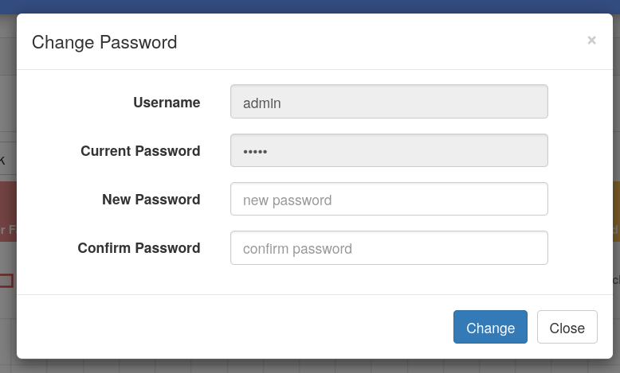
Une fois le mot de passe modifié, vous arriverez à l'accueil du serveur Technitium :
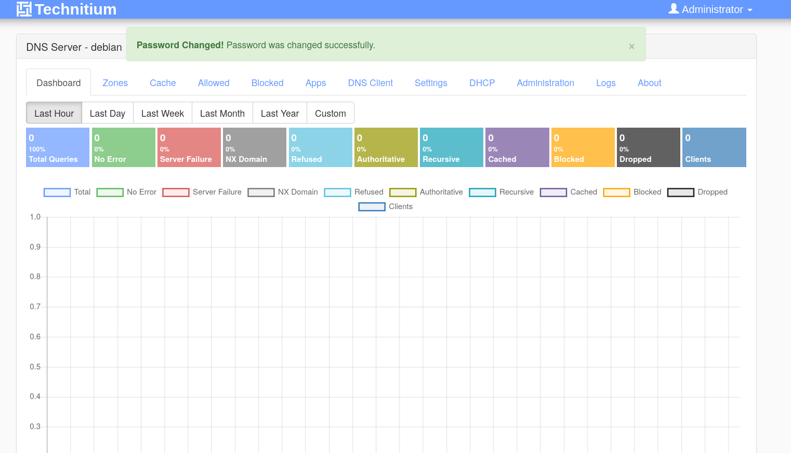
3. Premiers pas
Accueil / Dashboard
Le tableau de bord affiche les stats en temps réel : requêtes totales, réponses sans erreur, échecs, NXDOMAIN, bloquées, clients top, domaines top et types de requêtes via graphiques et tableaux. Utile pour monitorer les performances et détecter anomalies comme malwares (hauts NXDOMAIN).
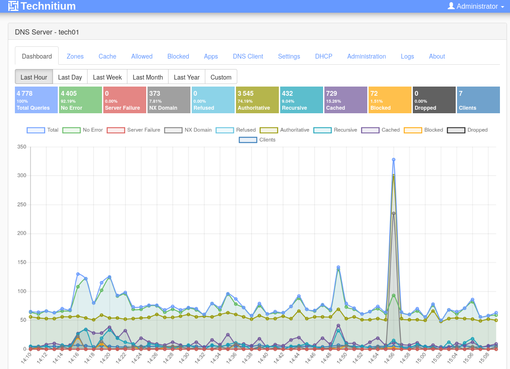
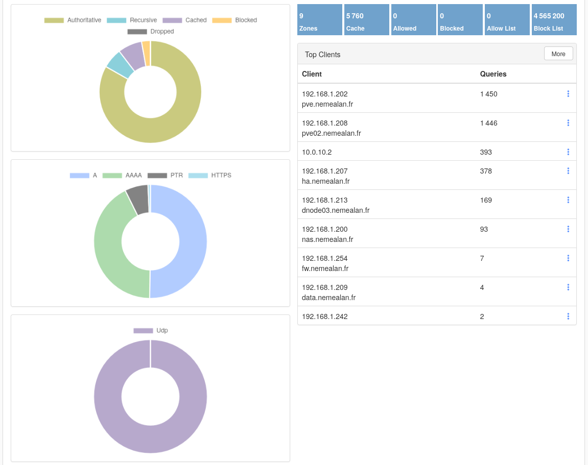
Zones
Gérez les zones autoritatives (Primary, Secondary, Stub, Conditional Forwarder) : ajoutez records A/AAAA/CNAME/MX/TXT/SOA/NS/PTR/SRV/CAA/ANAME/FWD/APP, déléguez sous-domaines, wildcard et désactivez records pour tests. Idéal pour héberger domaines internes ou staging.
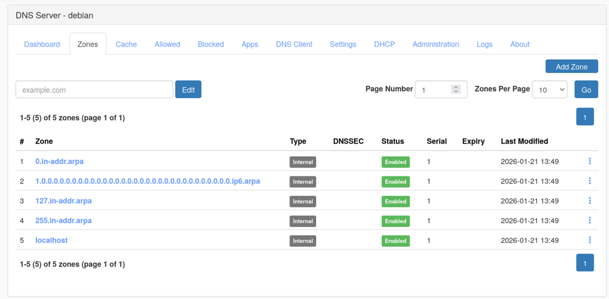
Cache
Visualisez et gérez le cache DNS : records avec TTL décroissant, negative caching, serve-stale (jusqu'à 3 jours), prefetch/auto-prefetch pour "cache chaud". Flushez ou analysez pour optimiser réponses rapides et débogage.
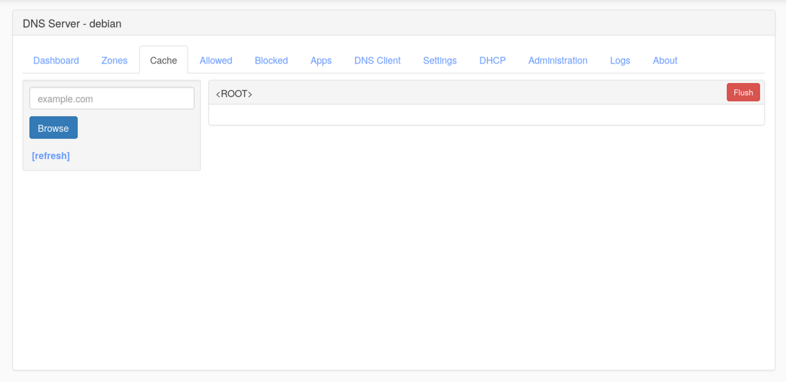
Allowed
Ajoutez des exceptions aux zones bloquées : débloquez domaines ou sous-domaines listés en Blocked/Block Lists, prioritaire sur blocages. Pratique pour whitelister apps légitimes comme connectivitycheck.android.com sans désactiver le filtrage global.
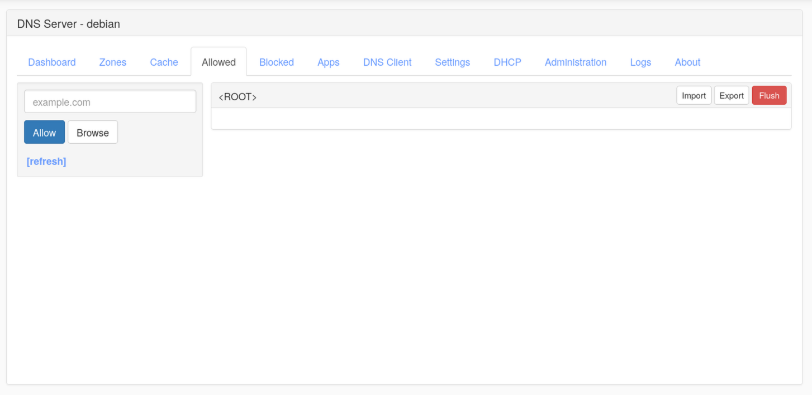
Blocked
Configurez zones bloquées manuelles ou via Block Lists URLs (mises à jour auto toutes 24h), répondez 0.0.0.0/:: pour A/AAAA. Surveillez stats blocages sur dashboard ; essentiel pour anti-pub/malware en réseau domestique.
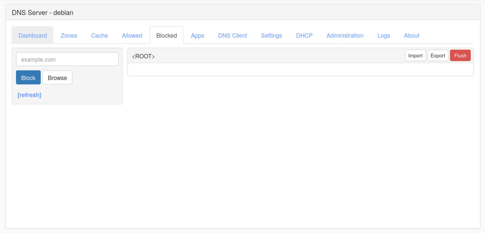
Apps
Installez et gérez DNS Apps depuis l'App Store intégré : associez via record APP pour traitement custom de requêtes (ex: apps intégrées pour features avancées). Framework pour dev custom, parfait pour étendre Pi-hole-like en homelab.
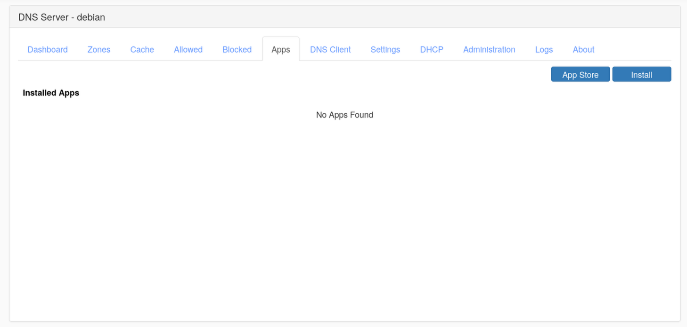
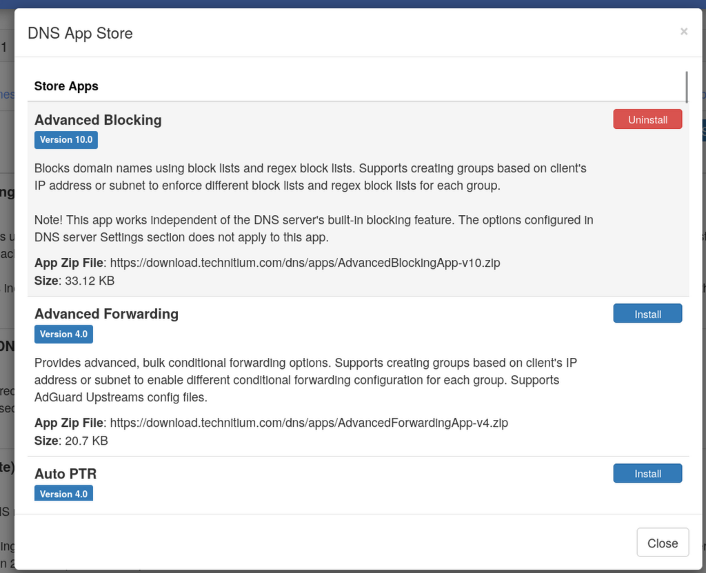
DNS Client
Outil intégré pour tester queries vers n'importe quel serveur (UDP/TCP/TLS/HTTPS/QUIC), import records en zone locale, proxy HTTP/SOCKS5 (ex: Tor). Incontournable pour diagnostics VLAN/DHCP et validation configs.
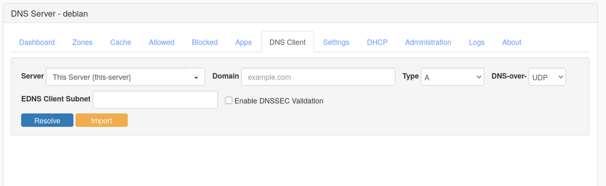
Settings
Paramétrez forwarders (DoT/DoH), recursion (Allow/Deny/Private/Networks), local endpoints (0.0.0.0:53), IPv6, proxy, prefetch, block lists, logging, web console SSL/ports. Activez DHCP scopes, logs queries ; base pour tuning perf/sécurité.
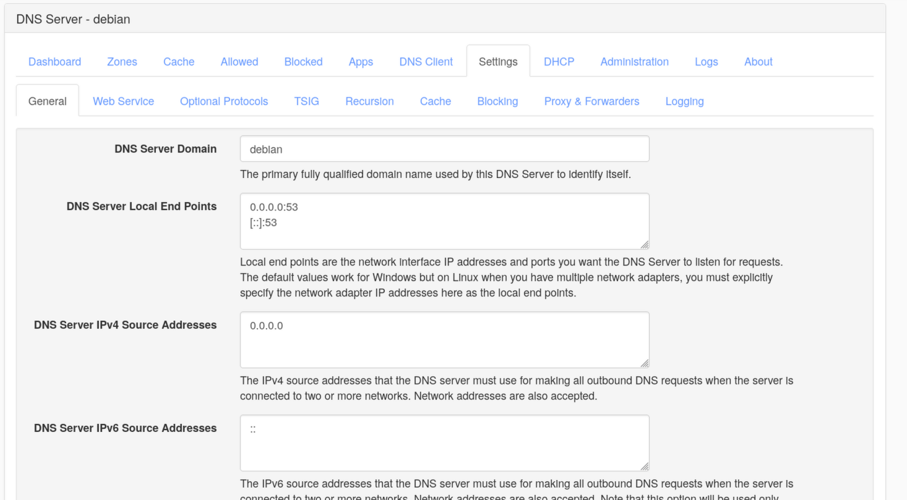
DHCP
Serveur DHCP intégré : créez scopes multiples pour réseaux/relays, auto-records forward/reverse DNS via option domain name, logs MAC/IP. Sync parfait avec DNS pour homelab Proxmox/TrueNAS sans bind externe.
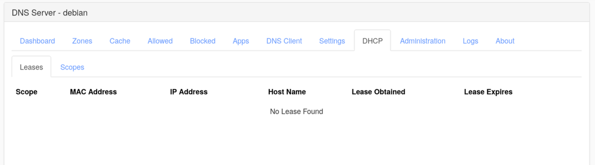
Administration
Gérez utilisateurs web console, API REST keys pour automation (PowerShell/Bash), backups configs/zones, monitoring API stats. Sécurisez accès HTTPS/self-signed ; utile pour multi-admin ou scripts ZFS/cluster.
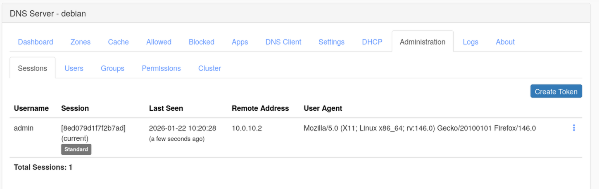
Logs
Consultez logs quotidiens : errors, audits, queries/réponses optionnelles (IP/MAC via DHCP), filtrez par type/date. Export pour analyse ; clé pour troubleshooting forwarders/VLAN ou audits conformité.
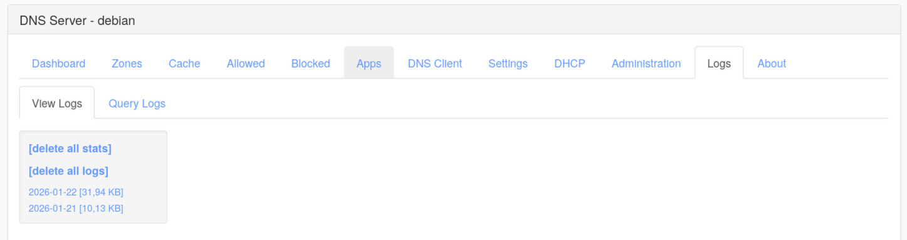
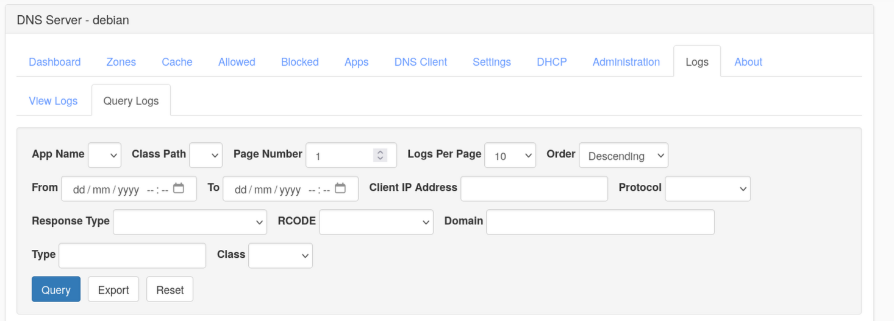
About
Affiche version (ex: v14), changelog, licence open source (.NET cross-platform), crédits, support email. Liens docs/help ; vérifiez updates pour features comme DoQ ou clustering en 2026.
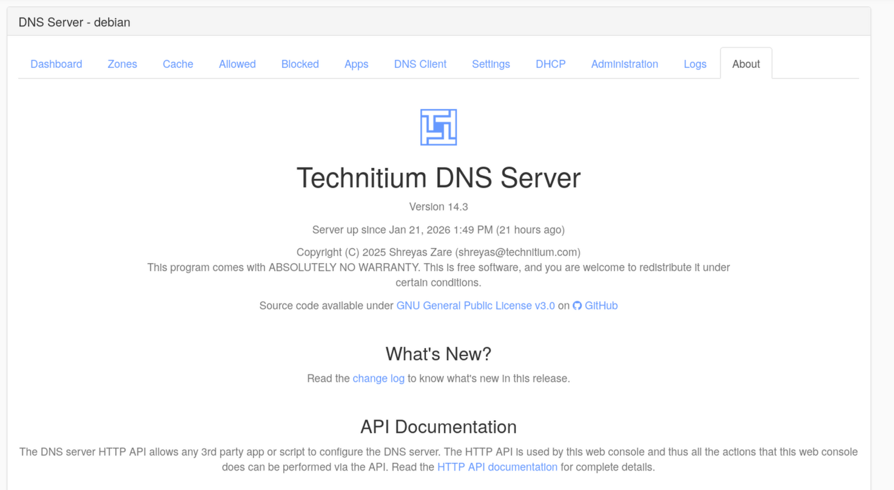
4. Mise en place du DNS
Aller dans Settings et en haut à droite, cliquez sur Add Zone.
Sur cette page, ajouté le nom de domaine voulue dans Zone.
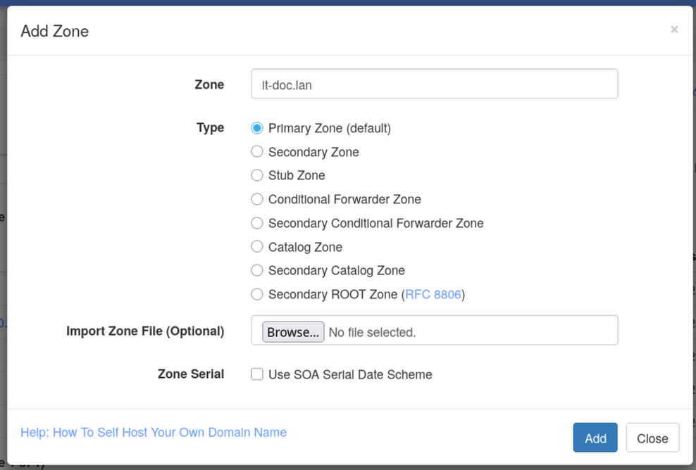
Une fois crée, on arrive sur cette page. Comme on peut voir on a déjà 2 entrées de créers qu'on ne touche pas.
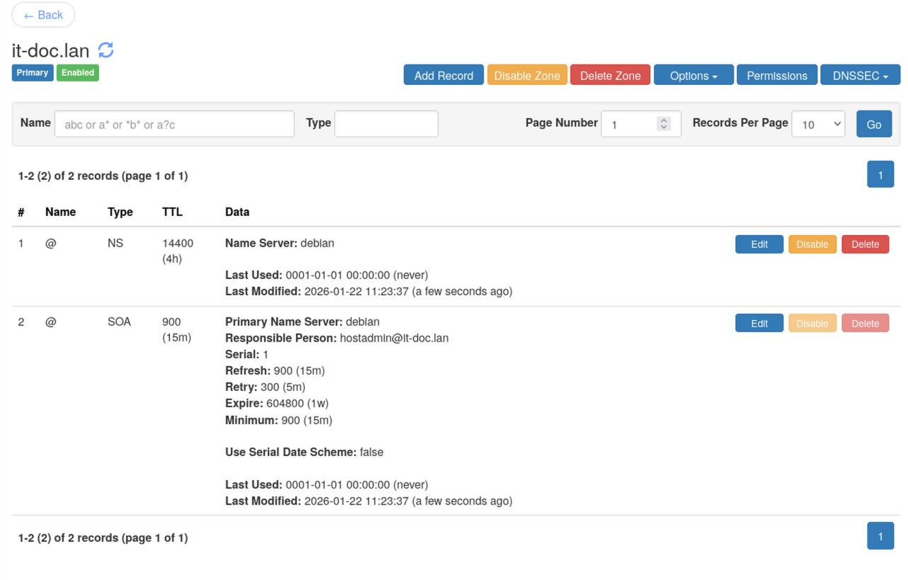
On va maintenant créer 1 entrée DNS pour le technitium. Comment sa marche?
Name : On mets le nom qu'on veut utiliser pour se connecter au serveur.
Type : A pour IPv4 - AAAA pour IPv6
IPv4 Address : L'IP du serveur qu'on pointe
Add reverse (PTR) record : Récupérer le nom du serveur
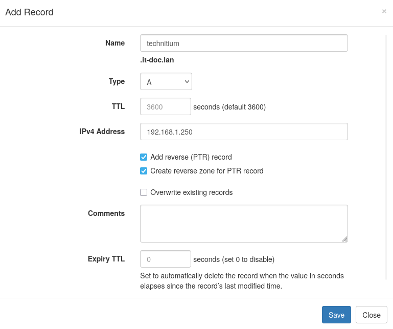
Pour tester l'entrée
Quand on fait un ping du technitium.it-doc.lan
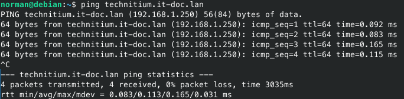
5. Mise en place du DHCP
Aller dans DHCP > Scopes
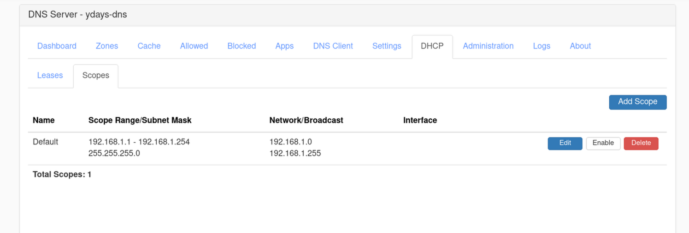
Vous pouvez garder ce scope par défaut si vous êtes dans un réseau en 192.168.1.0/24. Nous allons quand meme le supprimer et le faire ensemble.
Cliquer sur Add Scope
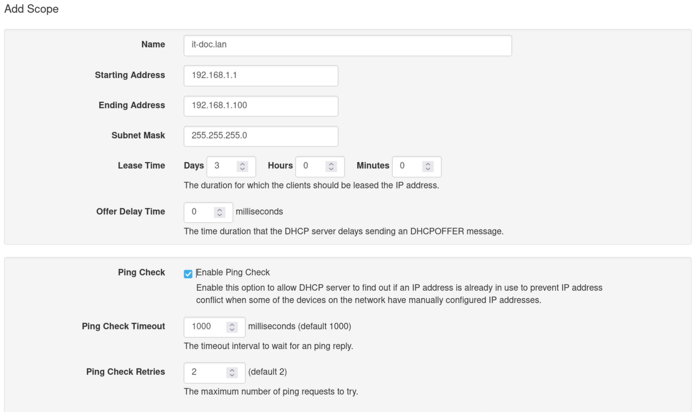
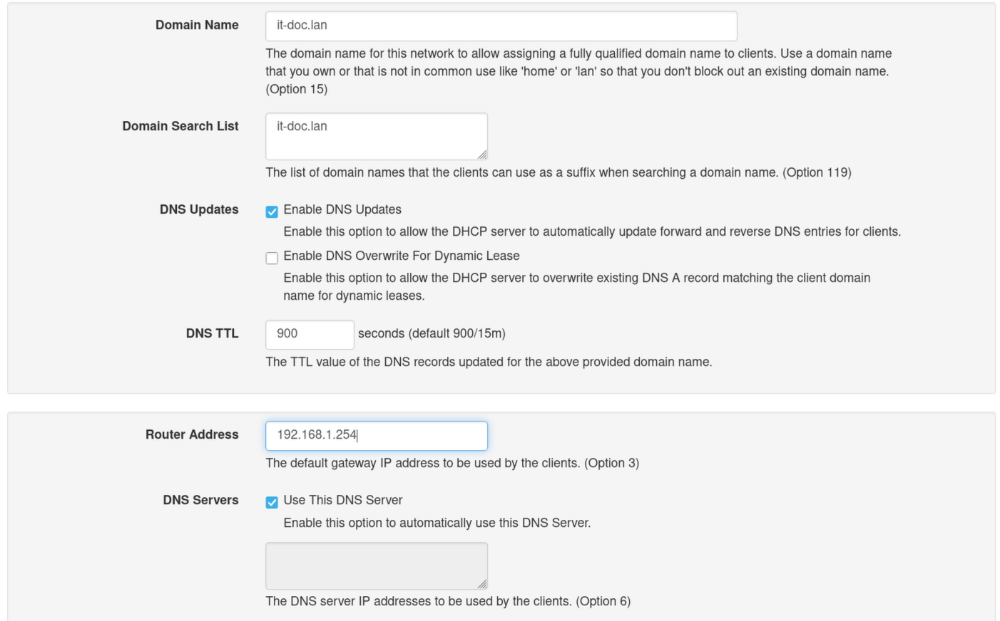
Vous pouvez ignorer tout le reste et mettre cliquer sur Save
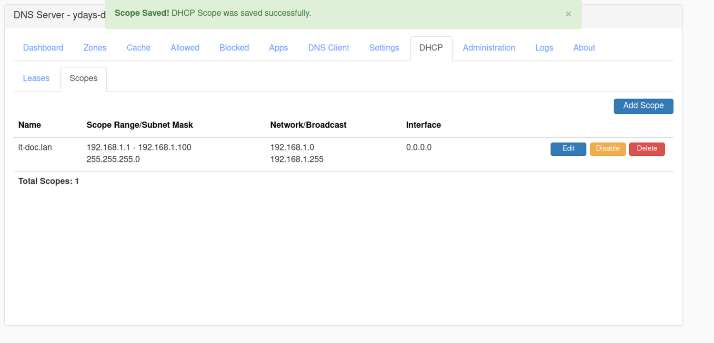
Voila, votre DHCP est pret et quand vous mettre une machine dans ce réseau, elle aura une adresse IPv4.